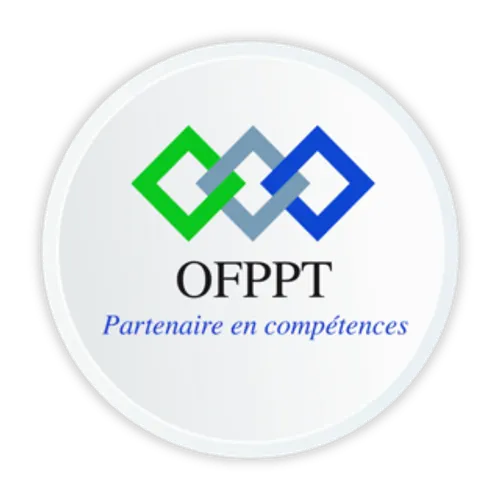

GESTION DES VÉHICULES V2
Application web de gestion des véhicules
Réalisé par : Ayoub Amaghouch
Encadré par : ES-Sarraj Fouad
Année de formation : 2026
PLAN DE PRÉSENTATION
Les différentes étapes de notre projet technique :
- Introduction — Présentation du projet.
- Besoin — Problématique et solution proposée.
- Analyse — Étude des besoins et fonctionnalités.
- Conception — Diagrammes et modèles du système.
- Réalisation — Technologies et prototype.
- Conclusion — Résultats du projet.
INTRODUCTION
Présentation du projet
Vehicle Management System est une application web qui permet de gérer les véhicules à travers une interface simple et intuitive.
L'application permet d'ajouter, consulter, modifier et supprimer des véhicules.
Objectif du projet
Développer une application web permettant de centraliser et de faciliter la gestion des informations relatives aux véhicules.
Les acteurs principaux
- Administrateur / Gestionnaire : gère les informations des véhicules.
- Utilisateur : consulte les véhicules enregistrés.
BESOIN DU PROJET
Problématique
Comment faciliter la gestion des véhicules et assurer une organisation efficace de leurs informations tout en simplifiant les opérations quotidiennes ?
Besoins principaux
Gestionnaire :
- Ajouter un nouveau véhicule.
- Consulter la liste des véhicules.
- Modifier les informations d'un véhicule.
- Supprimer un véhicule.
Application :
- Afficher les données de manière organisée.
- Vérifier les informations saisies.
- Assurer la communication entre le Frontend et le Backend.
- Stocker les informations des véhicules.
ANALYSE DU PROJET
Fonctionnalités principales
1. Create — Ajouter
- Ajouter un véhicule avec ses informations.
2. Read — Consulter
- Afficher la liste des véhicules.
- Consulter les détails d'un véhicule.
3. Update — Modifier
- Modifier les informations d'un véhicule existant.
4. Delete — Supprimer
- Supprimer un véhicule enregistré.
Validation des données
- Vérifier les champs obligatoires.
- Contrôler les informations saisies.
- Afficher des notifications à l'utilisateur.
CONCEPTION DU PROJET
Diagrammes et modèles
- Diagramme de cas d'utilisation : présente les fonctionnalités accessibles à l'utilisateur.
- Diagramme de classes : décrit les classes et leurs relations.
- Diagramme de séquence : présente les étapes d'une interaction entre l'utilisateur et le système.
- Modèle de données : représente la structure des informations stockées dans le fichier JSON.
Organisation du système
- Frontend : interface utilisateur.
- Backend : traitement des opérations.
- Stockage : fichier JSON contenant les véhicules.
RÉALISATION
Stack Technique
Backend
- 🐘 PHP — Langage de programmation côté serveur.
- 📦 Programmation orientée objet (POO) — Organisation du code avec des classes.
- 📄 JSON — Stockage des informations des véhicules.
- 🔗 API PHP — Communication et traitement des requêtes.
Frontend
- 🌐 HTML5 — Structure des pages web.
- 🎨 Tailwind CSS — Mise en forme et design de l'interface.
- ⚡ JavaScript — Gestion des interactions et des opérations CRUD.
Outils utilisés
- 💻 Visual Studio Code — Environnement de développement.
- 🌿 Git & GitHub — Gestion des versions du projet.
CONCLUSION
Bilan du projet
Ce projet nous a permis de développer une application web de gestion des véhicules afin de simplifier l'organisation, la consultation et la gestion des informations.
Résultats obtenus
- Ajout et enregistrement des véhicules.
- Consultation de la liste des véhicules.
- Modification des informations.
- Suppression des véhicules.
- Interface utilisateur simple et intuitive.
Perspectives
- Ajouter un système d'authentification.
- Ajouter une recherche et des filtres avancés.
- Améliorer le tableau de bord.
- Utiliser une base de données MySQL.
MERCI POUR VOTRE ATTENTION !